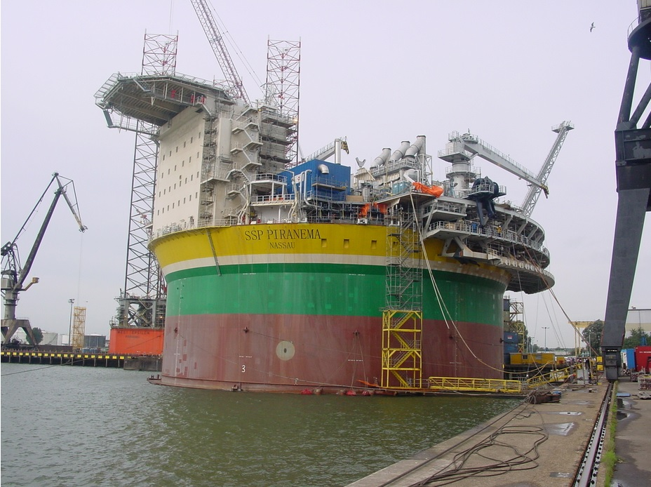
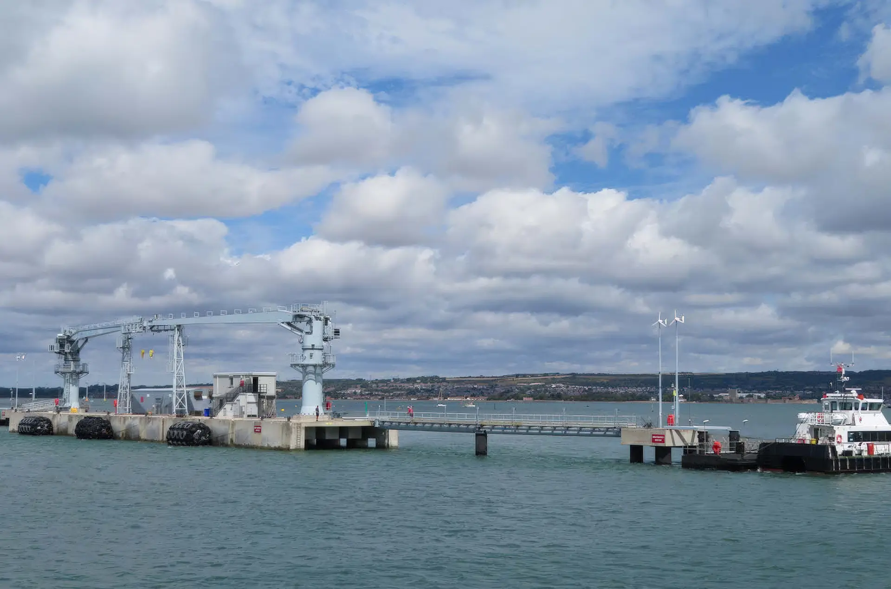
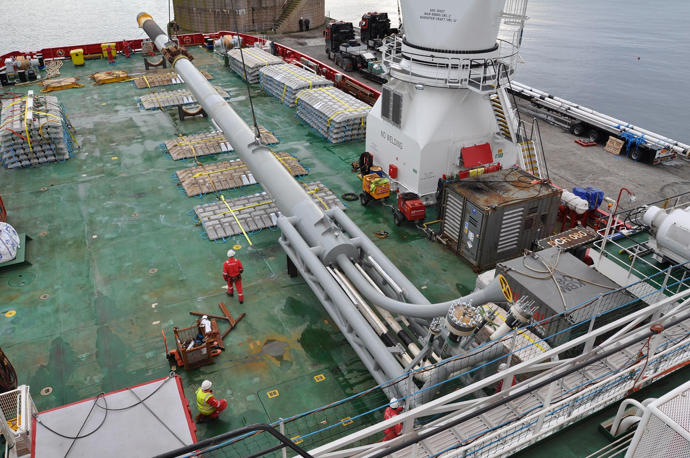
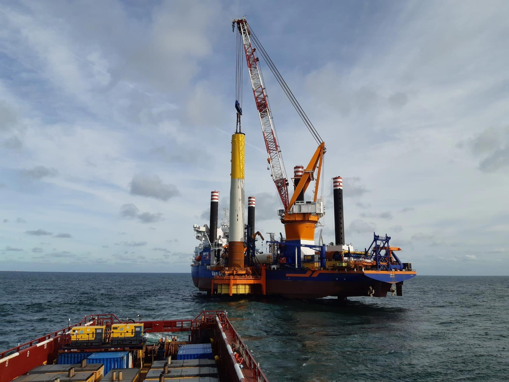

Geselecteerde ervaring
Projecten
Veertien projecten in vijf sectoren — van offshoreplatformen en FPSO’s tot windparken en industriële installaties.
TJ ENTERPRISEOFFSHORE PLATFORMBOUW
Portfolio
Alle projecten (14)
Selecteer een sector of bekijk alle projecten. De detailpagina’s geven de projectcontext en belangrijkste technische gegevens weer.
 Olie & gas Petro CanadaNieuwbouw offshoreplatform De Ruyter
Olie & gas Petro CanadaNieuwbouw offshoreplatform De Ruyter
 Olie & gas Aker BPNieuwbouw offshoreplatform Valhall
Olie & gas Aker BPNieuwbouw offshoreplatform Valhall
 Olie & gas Total FranceKaombo diepwaterproject
Olie & gas Total FranceKaombo diepwaterproject
 Maritiem AllseasConversie pijplegschip Audacia
Maritiem AllseasConversie pijplegschip Audacia
 Maritiem Heerema Marine ContractorsNieuwbouw kraanschip Sleipnir
Maritiem Heerema Marine ContractorsNieuwbouw kraanschip Sleipnir

Olie & gas Sevan MarineNieuwbouw FPSO SSP Piranema Offshore wind ParkwindOffshore windpark Northwester 2
Offshore wind ParkwindOffshore windpark Northwester 2
 Offshore wind Elicio / EnecoOffshore windpark Norther
Offshore wind Elicio / EnecoOffshore windpark Norther
 Petrochemie Kraft Europe / Mitsubishi Gas ChemicalNieuwbouw plant MXDA XA1
Petrochemie Kraft Europe / Mitsubishi Gas ChemicalNieuwbouw plant MXDA XA1

Defensie MoD UKRAM luffing jetty cranes
Olie & gas Total E&P NederlandK5CU offshoreplatform en pijpleiding Offshore wind ØrstedChanghua offshore windproject
Offshore wind ØrstedChanghua offshore windproject

Offshore wind Blauwwind / EnecoBorssele III & IV en Borssele V Offshore wind Northland PowerOffshore windpark Deutsche Bucht
Offshore wind Northland PowerOffshore windpark Deutsche Bucht
Over de projectinformatie
De projectpagina’s beschrijven de context en de technische kerngegevens van installaties waarmee ervaring is opgedaan. De gegevens zijn gebaseerd op openbare projectinformatie. Waar fabricagelocaties of contractuele details niet openbaar zijn gemaakt, worden ze hier ook niet vermeld.